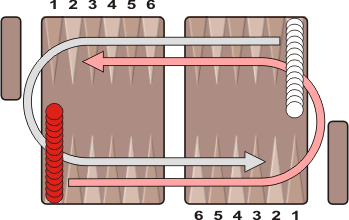

トルコ式バックギャモン (モウルテジム、Moultezim) は、バックギャモンと同じ用具を使いますが、ルールが異なります。ギリシャでは Fevga と呼ばれるゲームがあり、ルールはほとんど同じですが若干異なります。
初期配置は、以下の通りで両者ともにスタート地点に15個のチェッカーを重ねます。
進行方向は、バックギャモンとは違い、両者ともに反時計周りになります。チェッカーを全部目的地(相手のアウターテーブル)に集め、相手より先に全てのチェッカーをあがりにすることが目的です。
単独のチェッカーがバックギャモンのようにヒットされることはありません。つまり、チェッカー１つだけでポイントを作ることになり、相手の駒をブロックできます。そして、単独のチェッカーの上に自分の同じ色のチェッカーをのせることは可能です。したがって、バックギャモンでいうところのプライムは、自分のチェッカーを連続して６個占有することで作ることができます。ただし、このプライムに関しては、相手のスタート地点(イナーテーブル)を６個占領してはならないというルールがあります。
最初に動かした駒が相手のスタートポイントより先に入る前に、２番目の駒をスタート地点から動かすことはできません。